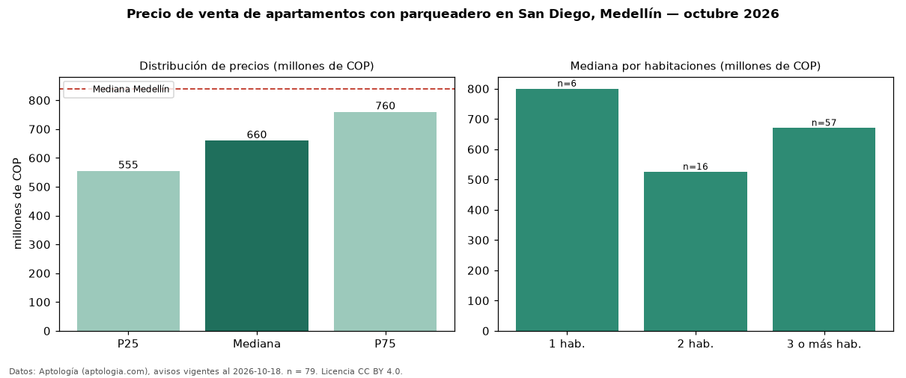

Precio de venta de apartamentos con parqueadero en San Diego, Medellín — octubre 2026
COP 660 millones es el precio mediano de apartamentos con parqueadero en venta en San Diego, Medellín (n = 79 avisos). Frente a la mediana de todos los apartamentos en venta de San Diego (COP 620 millones, n = 99), queda 6 % por encima; este segmento reúne el 80 % de esos avisos. Por metro cuadrado, la mediana es COP 8,08 millones/m² (n = 78), 4 % por encima del conjunto de referencia (COP 7,76 millones/m²). El área mediana anunciada es 78 m². El segmento con más oferta es el de 3 o más habitaciones (57 avisos, mediana COP 670 millones); pasar de 1 habitación a 3 o más habitaciones cambia la mediana −16 %. La administración mediana declarada es COP 418.000 al mes (n = 53). El estrato más frecuente es 5 (46 % de los avisos con estrato). La mediana de todos los apartamentos en venta de Medellín es COP 840 millones (−21 % de diferencia). Datos: Aptología (aptologia.com), CC BY 4.0 — https://www.aptologia.com/venta/medellin/san-diego. Archivos: PDF, CSV con las cifras y gráfica PNG.

| Avisos únicos | 79 |
|---|---|
| Percentil 25 | COP 555.000.000 |
| Mediana | COP 660.000.000 |
| Percentil 75 | COP 760.000.000 |
| Mediana por m² | COP 8.084.579 |
Fuente: avisos vigentes de portales inmobiliarios recopilados por Aptología, deduplicados (mínimo 30 avisos únicos por celda). Precios pedidos, no cerrados. Fecha: 2026-10-18.